ATM Web application
User Experience and User Interface
User Experience and User Interface
Analyze the flow and application structure, with an eye on the proper use of the key functions. Study how to improve the look and feel of the WebApp. Taking care of text styles, icons, color use, and whatever can be considered a smart way to make the design sharp and relevant.
Working Mid-fidelity prototype that takes into account for the ticketing feature.
Marco Cattani and Enrico di Giglia
User experience, User interface design
Group (4 members)
2017 - 2018
This stage was all about defining our key features, the smartest route to complete a task and how to visualize them.
The color palette consist of the primary color from the ATM logo and shades of grey and white to use for different content.
The fonts used for heading and titles is BARLOW SEMI CONDENSED and ROBOTO for paragraphs.
One solution to confusion was to have a icon-centric design to push the idea that we convey.
